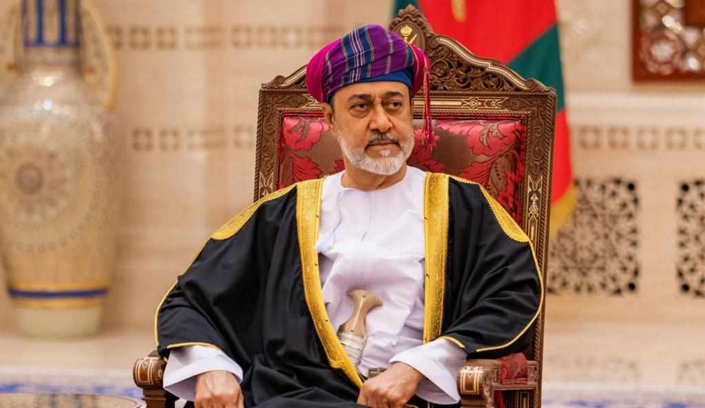
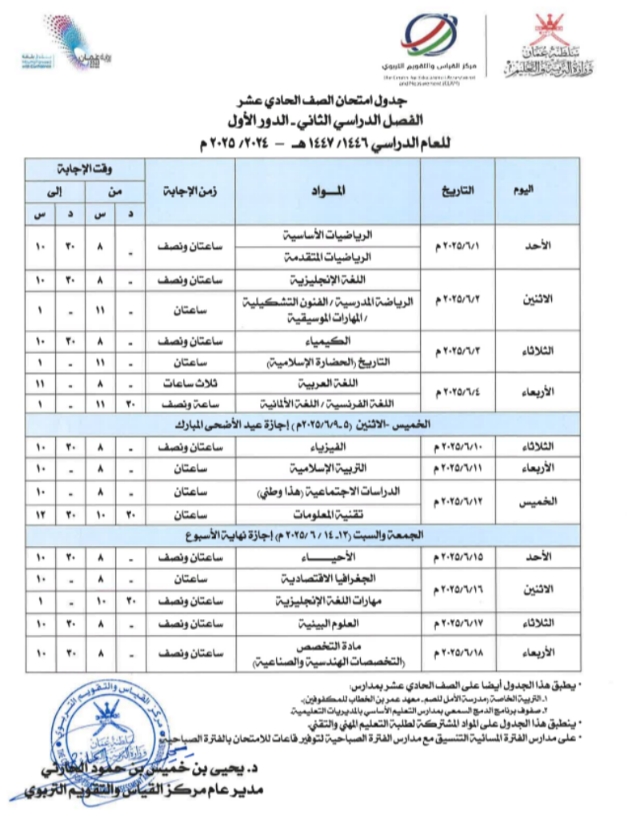

أهم الأخبار
اتفاق وقف إطلاق النار بين أمريكا والحوثيين ومشاورات عمانية لدعم الحل السياسي في اليمن
اتفاق وقف إطلاق النار بين أمريكا والحوثيين: أعلنت وزارة الخارجية العمانية التوصل إلى اتفاق لوقف إطلاق النار بين الولايات المتحدة وجماعة الحوثيين في اليمن، في خطوة تعكس دور عمان الإقليمي في الوساطة.

عقدت سلطنة عمان جلسة مشاورات مع الحكومة اليمنية الشرعية في مسقط، بهدف دعم استئناف العملية السياسية والتوصل إلى حل عادل وشامل للصراع.
عمان تنجح بوقف النار وتدعم الحل السياسي
عُمان تنجح في التوسط لوقف إطلاق النار بين أمريكا والحوثيين، وتبحث مع الحكومة اليمنية سبل الحل السياسي.
أخبار أخرى
عمان تطلق حملة "قطرة حياة" للتبرع بالدم
أطلقت سلطنة عمان حملة وطنية للتبرع بالدم تحت شعار "قطرة دم تنقذ حياة"، بمشاركة واسعة من المواطنين والمقيمين.
استياء واسع من جدول الامتحانات
شهدت سلطنة عمان حالة من الاستياء بين الطلاب وأولياء الأمور بسبب جدول الاختبارات النهائية الذي يتزامن مع عيد الفطر المبارك.